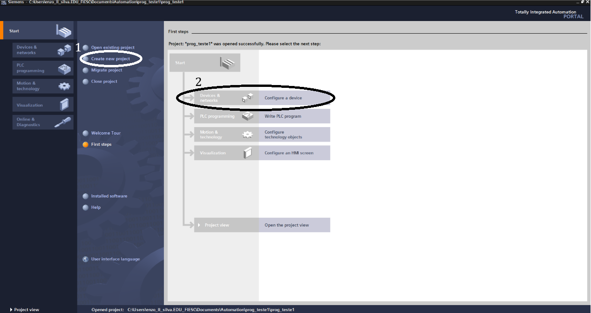
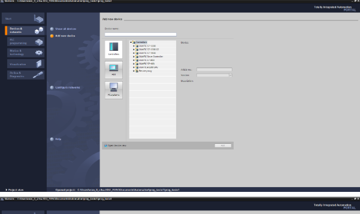
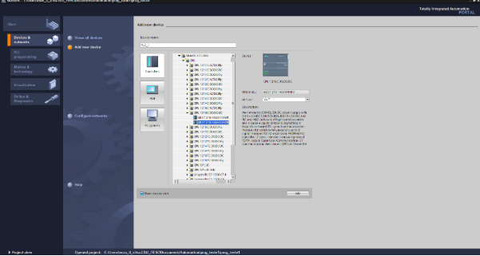
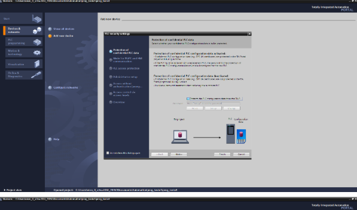
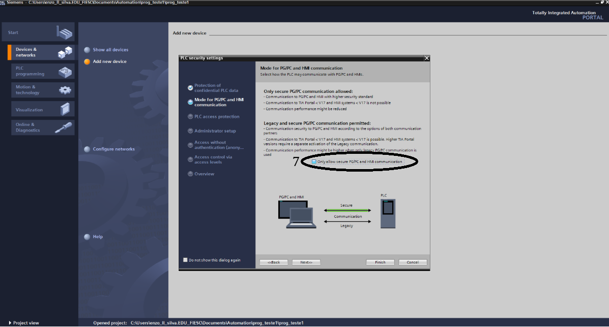
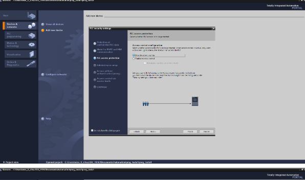
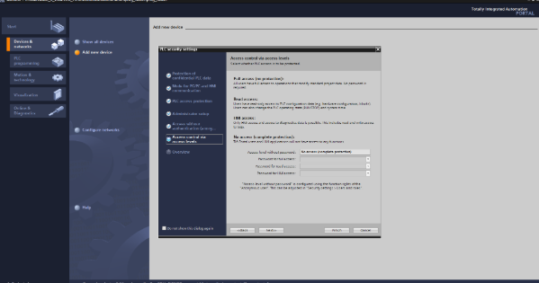
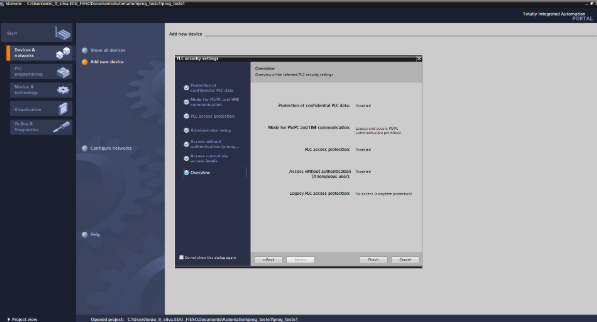

Programação de CLP na Prática
Aprenda a linguagem Ladder e siga o tutorial passo a passo no ambiente TIA Portal da Siemens.
Programação em Lógica Ladder
A linguagem Ladder (Diagrama de Contatos) é a mais popular na automação. Ela utiliza símbolos gráficos baseados em diagramas elétricos industriais:
- Contato NA (Normalmente Aberto)
-| |-: Permite a passagem de sinal apenas quando ativado (1). - Contato NF (Normalmente Fechado)
-|/|-: Permite a passagem de sinal enquanto desativado (0). - Bobina de Saída
-( )-: Ativa a saída ou variável correspondente quando energizada pela linha (Rung).

Passo 1: Após criar o projeto e dar um nome a ele, terá que clicar na opção de serviços e internet.

Passo 2: Após em criar um novo serviço, terá que selecionart a primeira opção de controlador, e depois clicar em CPU.

Passo 3: Após em clicar em CPU, deverá escolher a de nome "1215C DC/DC/DC" e em seguida clique no segundo serviço e depois confira se está na versão mais atual (V4.7).

Passo 4: Após isso, Deverá tirar as proteções que nesse caso não serão necessárias, mas em empresas seria sim bom ter senhas e proteção de serviços.

Passo 5: Logo após, faça o PG e PC conversarem entre si.

Passo 6: Depois, desative o controle e barreira e pule para o final.

Passo 7: Confira se tudo está desativado e clique em finalizar.

Passo 8: Quando chegar nessa tela, poderá começar a programar no PLC.